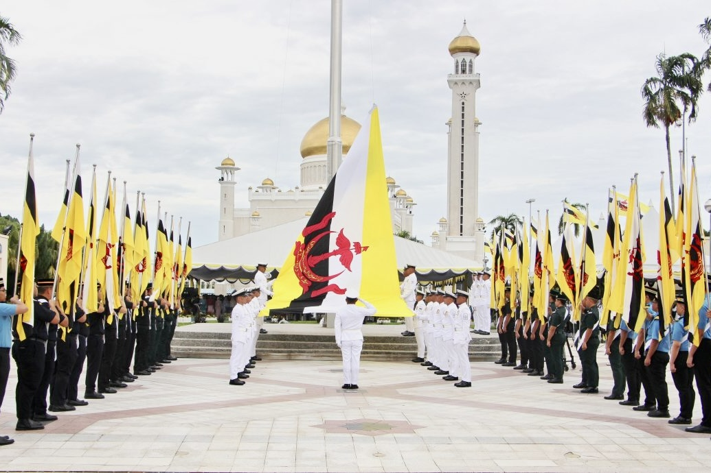
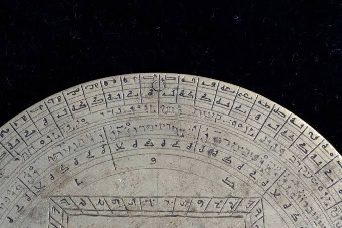
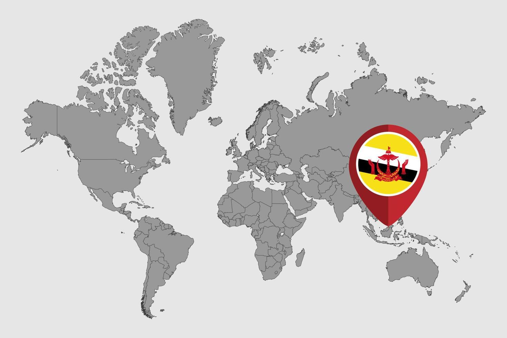
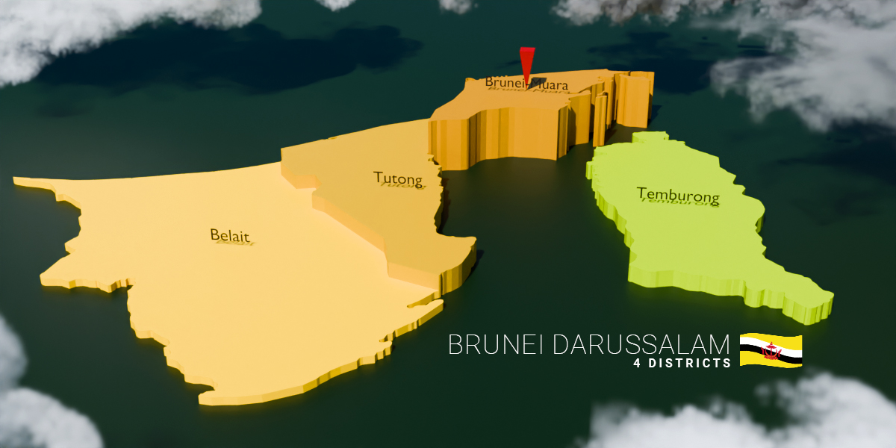
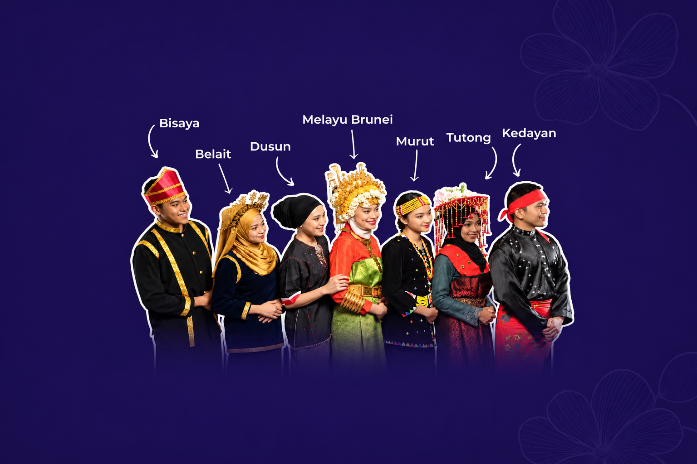
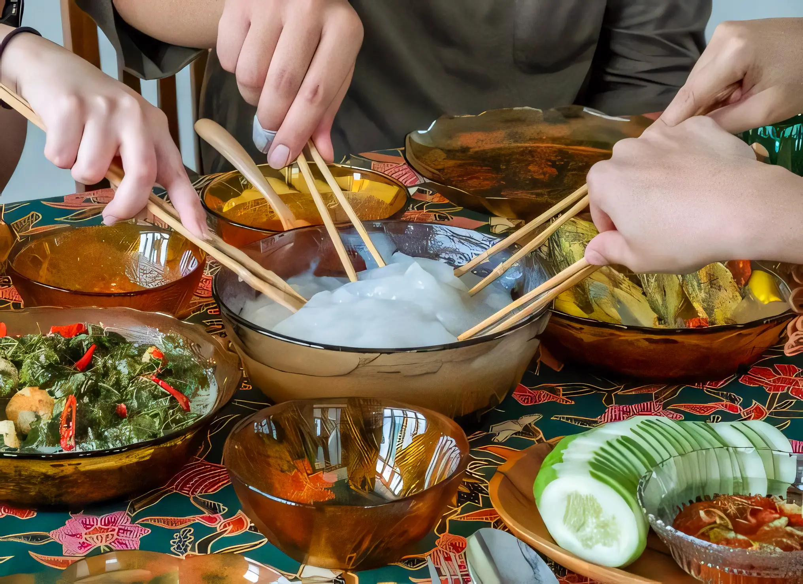
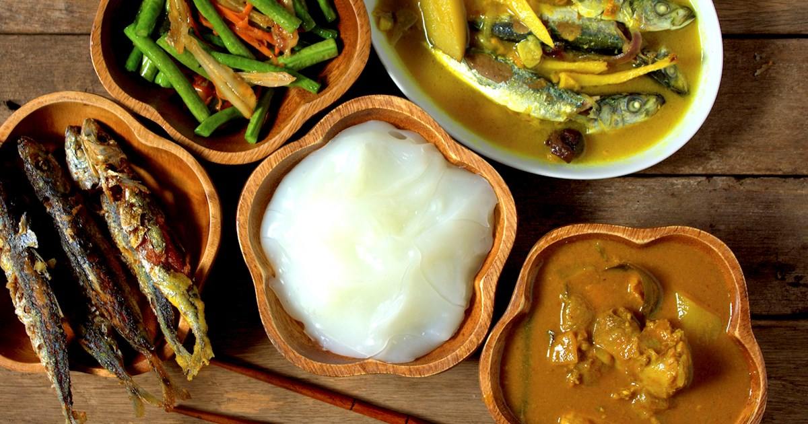
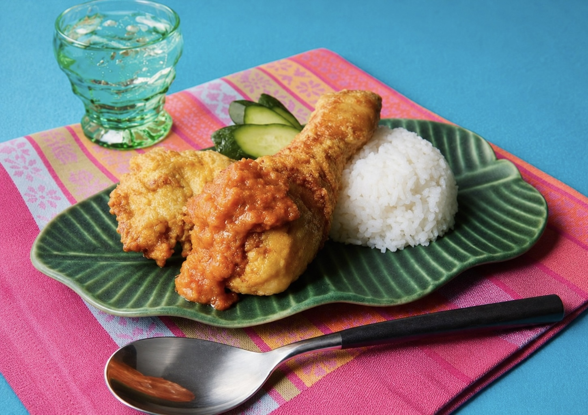
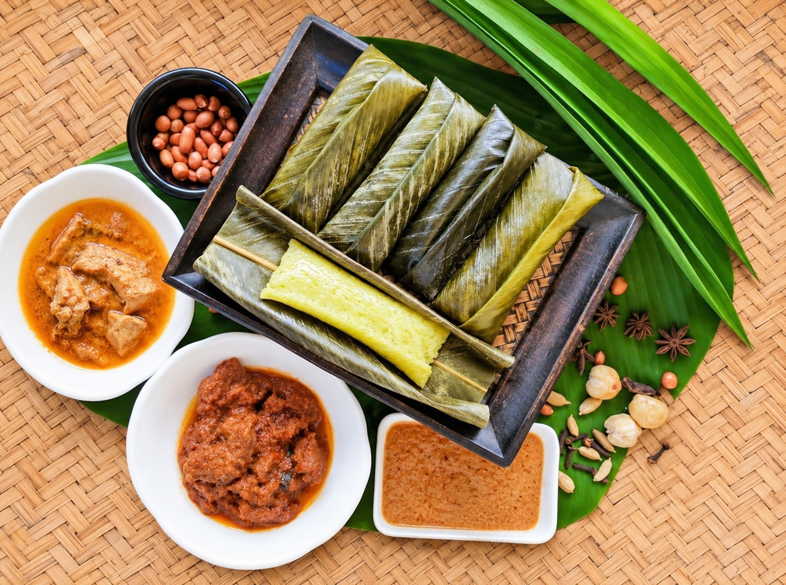
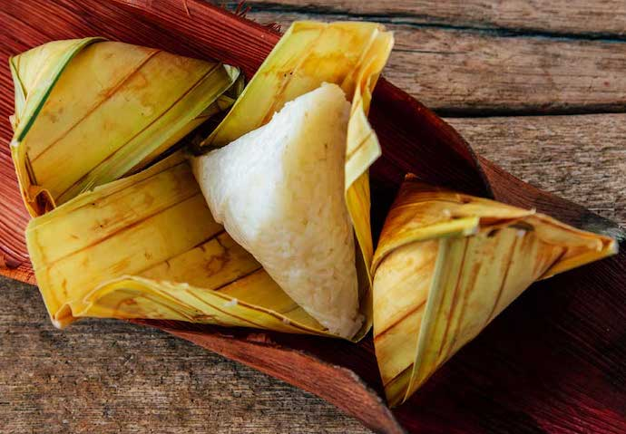

INTRODUCTION
The Abode of Peace
Brunei Darussalam is a small Malay Sultanate on the northern coast of the island of Borneo. Its coastline meets the South China Sea and much of its land is still covered in untouched rainforest. Visitors find a calm, safe country with golden mosques, a historic water village and a warm welcoming way of life.
A Short History
Brunei was once a center of a powerful sultanate that controlled much of Borneo and nearby islands from the 15th to 17th century. It became a British protectorate in 1888 and on 1 January 1984, it regained full independence. Today it keeps its royal traditions and Islamic values alive while enjoying modern development.
Choose a topic below to learn what to expect before you arrive.

🏳️Facts & Figures
Capital: Bandar Seri Begawan.
Language: Malay, with English widely spoken and Chinese.

📅Calendar
Brunei follows the Islamic calendar, the weekend is Friday and Sunday

📍Location
On the north coast of Borneo, beside the South China Sea

🛣️Districts
Brunei is divided into four first-levels administrative divisions called districts

🕌Culture and Traditions
Blend of Malay traditions, Islamic faith and royal governance

🍽️Food
Try ambuyat, nasi katok and other local favourites
Facts Figures
- Official name: Negara Brunei Darussalam
- Capital: Bandar Seri Begawan
- Independence: 1 January 1984
- Government: Absolute monarchy led by His Majesty the Sultan
- Language: Malay officially, English and Chinese
- Currency: Brunei Dollar (BND)
- Religion: Islam
Flag: A yellow background with white and black diagonal stripes and the national crest in red in the center

Calendar
Brunei uses the Gregorian calendar for daily life, alongside the Islamic (Hijri) calendar for religious events and Chinese lunar calendar for events like Chinese New Year.
- National Day: 23 February
- His Majesty the Sultan Birthday: 15 July
- Royal Brunei Armed Forces Day: 31 May
Fixed Date Public Holiday
- Start of Ramadan
- Hari Raya Aidilfitri and Hari Raya Aidiladha
- Islamic New Year
Movable & Moon-dependat Islamic Holidays
Location
Brunei is on the northern of the island of Borneo in Southeast Asia. The land is completely surrounded by Malaysian state of Sarawak. The country is divided into two disconnected parts, the larger western segment and the smaller eastern Temburong District, seperated by Sarawak.
Districts
- Brunei Muara: The smallest and the most densely populated district that contains the capital
- Belait: The largest district and primary heartland of Brunei's oil and gas production
- Tutong: Located between Brunei Muara and Belait, it features a mix of coastal towns, rural village and natural attractions
- Temburong: The second largest and easternmost district of Brunei thats covered in protected rainforest
Culture and Traditions
Brunei's national philosophy is Melayu Islam Beraja(MIB), Malay Islamic Monarchy, which officially binds together Malay culture, Islamic faith and loyalty to the Sultan. Islam is the state religion and its teaching shape daily routines, legal systems and community norms. Visitors are welcome and a few simple courtesies go a long way.
- Modest Dress: Dress modestly, covering shoulders and knees, especially at mosques and government buildings
- Right Hand Rule: Always use your right hand when giving, receive or eating food as the left hand is considered unclean
- Greetings: A gentle, light handshake often followed by touching the right hand to the chest
- Traditional Wear: Men wear the baju melayu with a songkok whereas the women wear the baju kurung
- Alcohol: Alcohol is banned for sale and public consumption in Brunei
Food
Bruneian cuisine reflects a rich mix of Malay, Indonesian, Chinese and Indian flavours. All food sold in the country is halal.

Ambuyat
The national dish is a sticky, translucent starch extracted from sago palm trunk with a tangy sauce

Nasi Katok
Wrapped in a brown paper, it contains a plain white rice, crispy chicken and a spicy samble

Kelupis
Often served alongside curries, a glutinous rice cooked with coconut milk and wrapped neatly in leaves

Tapai
Offering a distinct sweet and tangy flavour, aa fermented rice wrapped tightly in nipah palm leaves